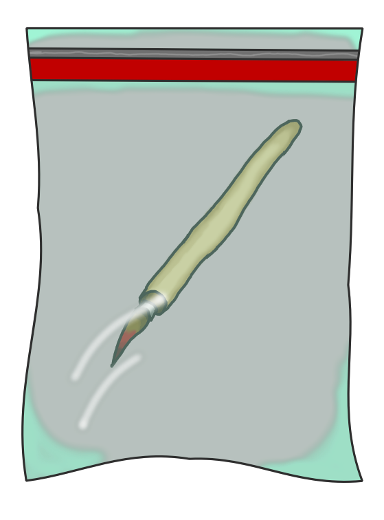
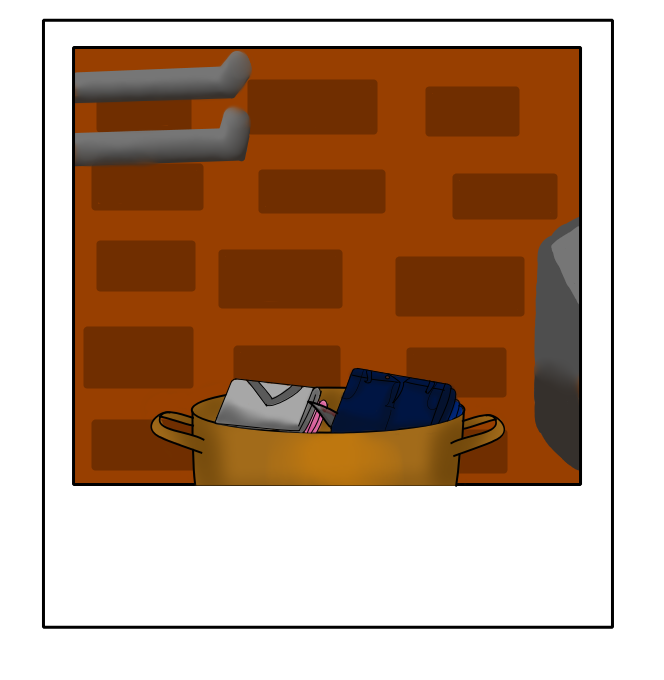
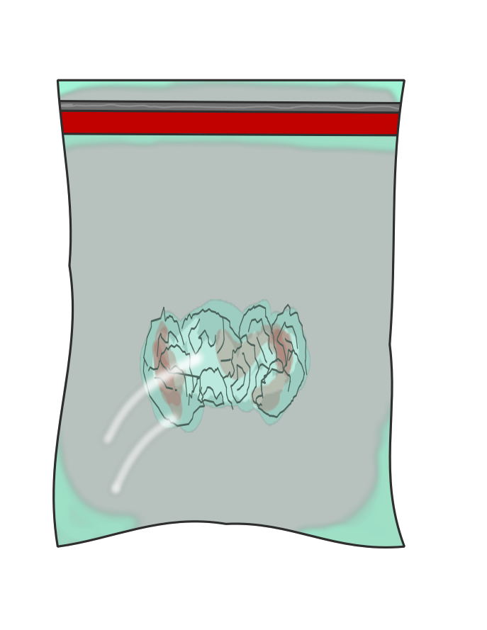
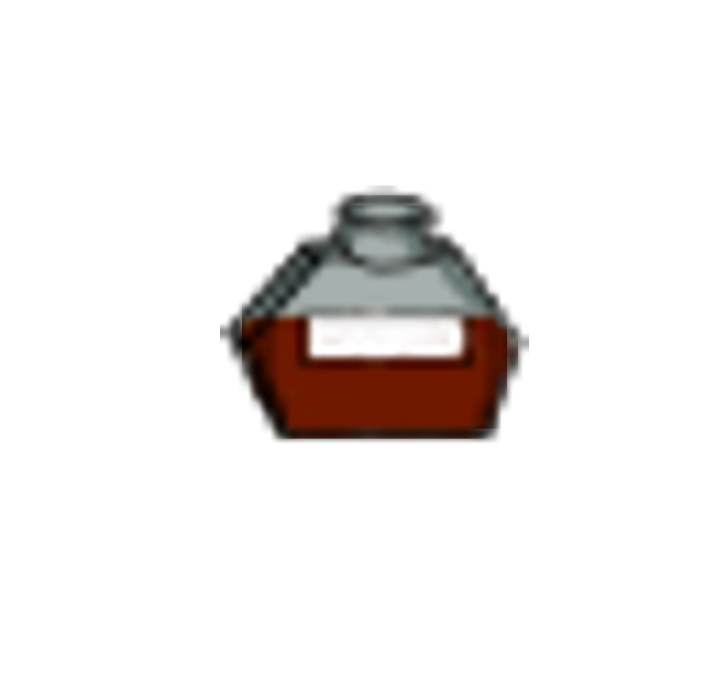
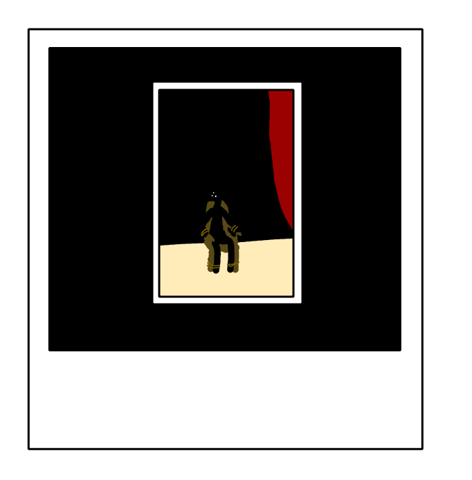

<div class="w-100 scenario">
  <span> Evidências </span>
  <div class="row d-flex">
    <div class="col" *ngIf="evidence1">
      
    </div>
    <div class="col" *ngIf="evidence2">
      
    </div>
    <div class="col" *ngIf="evidence3">
      
    </div>
    <div class="col" *ngIf="evidence4">
      
    </div>
    <div class="col" *ngIf="evidence5">
      
    </div>
    <div class="col" *ngIf="evidence6">
      
    </div>
  </div>
</div>
